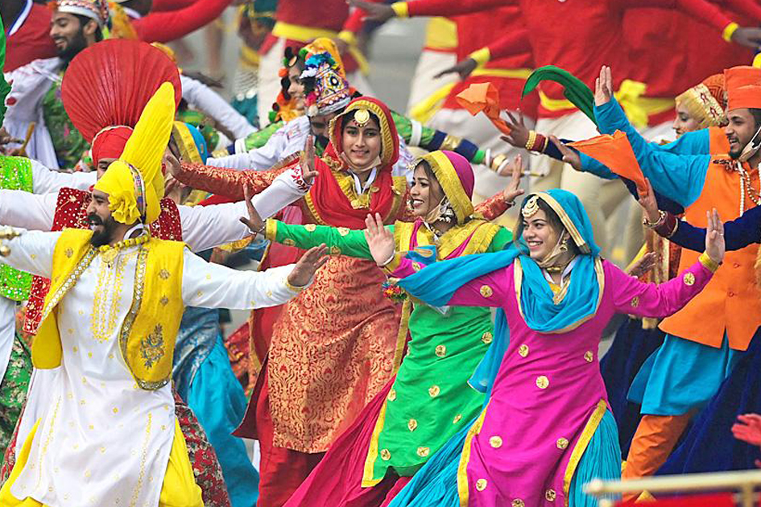

Welcome to Chandigarh!

Chandigarh, the capital city of both Punjab and Haryana, is a Union Territory of India known for its unique blend
of modernity and tradition. Designed by the famous architect Le Corbusier, Chandigarh stands out for its urban
planning, architectural excellence, and cultural vibrancy.
Festivals in Chandigarh are celebrated with great enthusiasm, reflecting its diverse cultural heritage. Baisakhi,
marking the harvest season, is a major festival celebrated with traditional music, dance, and feasting. Other
significant festivals include Diwali, Holi, and Lohri, each celebrated with colorful decorations, cultural
performances, and community gatherings. The Chandigarh Carnival, held annually, showcases the city's cultural
diversity with parades, art exhibitions, and performances by local artists.
The cuisine of Chandigarh is a delightful mix of Punjabi and North Indian flavors. Rich and hearty dishes like
butter chicken, sarson ka saag (mustard greens), and makki di roti (cornbread) are popular. Street food such as
chole bhature (spicy chickpeas with fried bread), golgappas (pani puri), and tikki (potato patties) are beloved by
locals and visitors alike. The city's culinary scene also includes a variety of international cuisines, reflecting
its cosmopolitan nature.
Music and dance are integral to Chandigarh's cultural life. Traditional Punjabi music and dance forms like Bhangra
and Giddha are widely performed during festivals and celebrations, characterized by their high energy and vibrant
costumes. Classical music and dance, including performances of Hindustani classical music and Kathak, also have a
strong presence in the city's cultural scene. The annual Chandigarh Arts and Heritage Festival is a major event
that features performances by renowned artists from across India.
Chandigarh’s architectural heritage is a testament to its modernist design and urban planning. Key landmarks
include the Capitol Complex, a UNESCO World Heritage site featuring the High Court, Secretariat, and Legislative
Assembly buildings. The Open Hand Monument, a symbol of peace and reconciliation, and the Rock Garden, an
innovative space created from industrial and urban waste, are other notable attractions. The city's layout, with
its sectors and wide boulevards, reflects Le Corbusier's vision of an ideal urban space.
Handicrafts in Chandigarh are influenced by the rich traditions of Punjab and Haryana. Phulkari embroidery, known
for its vibrant colors and intricate patterns, is a popular craft. Woodwork, pottery, and traditional Punjabi
juttis (footwear) are also notable handicrafts that reflect the region's cultural heritage. The city's markets and
fairs often showcase these artisanal products, offering visitors a chance to purchase unique and handcrafted
items.
Overall, Chandigarh’s culture is a harmonious blend of tradition and modernity. It offers a unique cultural
experience through its vibrant festivals, delectable cuisine, dynamic arts scene, and innovative architecture. The
city's commitment to preserving its cultural heritage while embracing contemporary influences makes Chandigarh a
fascinating and welcoming destination for travelers and culture enthusiasts alike.